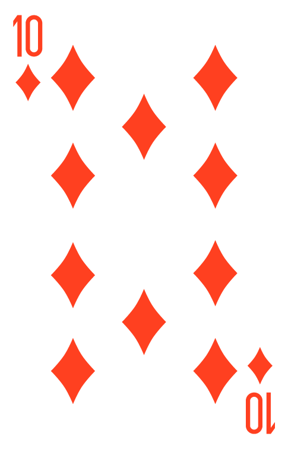
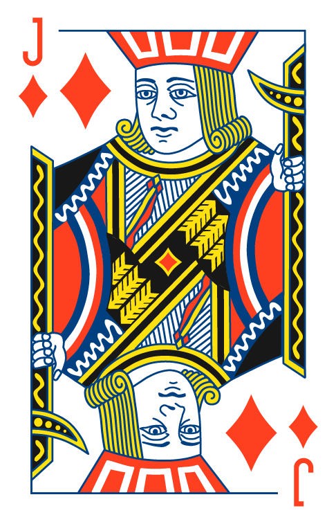
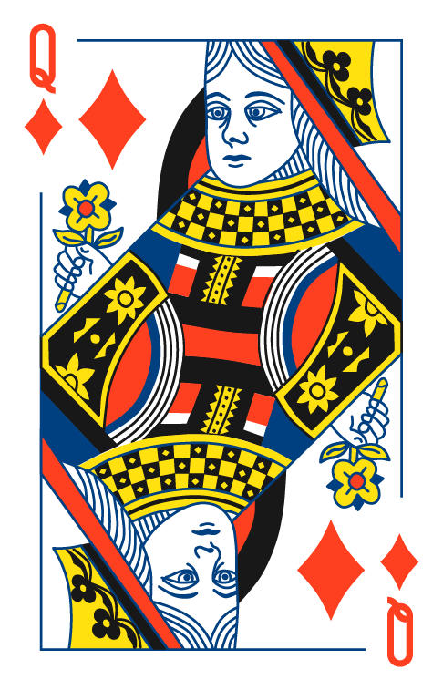
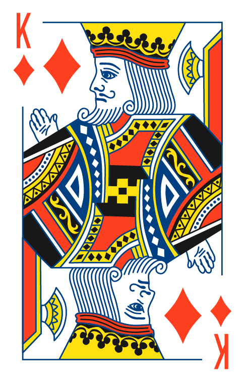
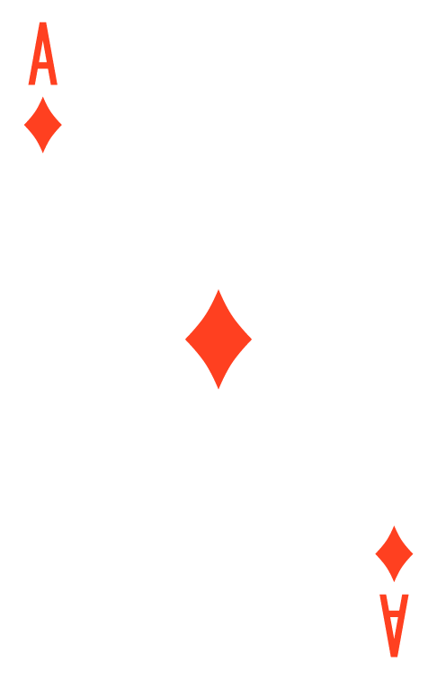

GUIDE TO POKER
The Basics










Poker is a competitive card game that combines skill, probability, and psychology. Every hand you play is a small decision problem where you must choose whether to risk chips based on limited information. While luck influences short-term outcomes, poker is designed so that better decisions win in the long run. That’s why experienced players don’t focus on individual hands—they focus on making consistently good decisions over many rounds. Learning poker is mostly about understanding patterns, avoiding common mistakes, and gradually improving how you think about risk and reward at the table.
The goal in poker is to win chips from other players. You do this either by having the best five-card hand at showdown, or by forcing all other players to fold before the showdown happens. This creates an interesting dynamic: you can win even with weak cards if you play them correctly, and you can lose even with strong cards if you play them poorly. Because of this, poker is not just about what you hold—it’s about what your opponents think you hold.
Poker is played in structured rounds called hands. Each hand starts with players being dealt cards, followed by a series of betting rounds where decisions are made in turn. During each round, players can either stay in the hand or fold. As the round progresses, more information is revealed through community cards and other players’ actions, allowing decisions to become more strategic. The hand ends either when only one player remains (they win automatically), or when multiple players reach the final stage and reveal their cards to compare strength.
Poker revolves around a small set of actions, but each one has strategic meaning. The way you use these actions determines how much control you have over the game.
* Check → Staying in the hand without betting when no bet has been made yet. This is often used to gain more information without risking chips.
* Bet → Starting the betting in a round. This puts pressure on other players and sets the tone of the hand.
* Call → Matching another player’s bet to stay in the round. This is a neutral action but can become expensive if overused.
* Raise → Increasing the current bet. This is a strong move used to apply pressure or build a bigger pot when you have a strong hand.
* Fold → Giving up your hand and any chance of winning that pot. Folding is not a loss—it is often the correct decision to avoid bigger losses later.
Position is one of the most important strategic concepts in poker. It determines the order in which players act, and therefore how much information they have before making a decision. Players who act later in a round have a significant advantage because they can observe other players’ actions first. This allows them to make more informed decisions and control the pace of the game. For example, a hand that is too weak to play in early position might become playable in late position simply because no one has shown strength yet. Good players constantly adjust their strategy based on position rather than treating every hand the same.
Starting hands determine your potential for the rest of the round. Some hands naturally connect well with strong combinations, while others are unlikely to improve and often lead to difficult decisions later. The biggest improvement beginners can make is learning to fold more often. Many hands that look “okay” are actually weak in the long run and tend to lose chips over time. Strong players focus on quality over quantity—they prefer to enter fewer hands, but with a clear advantage or plan.
Poker is a game of decisions, not just cards. Winning players are not the ones who get the best hands—they are the ones who make the best choices consistently.


Email: 4play@4contact.se
Number: (336) 494-6281